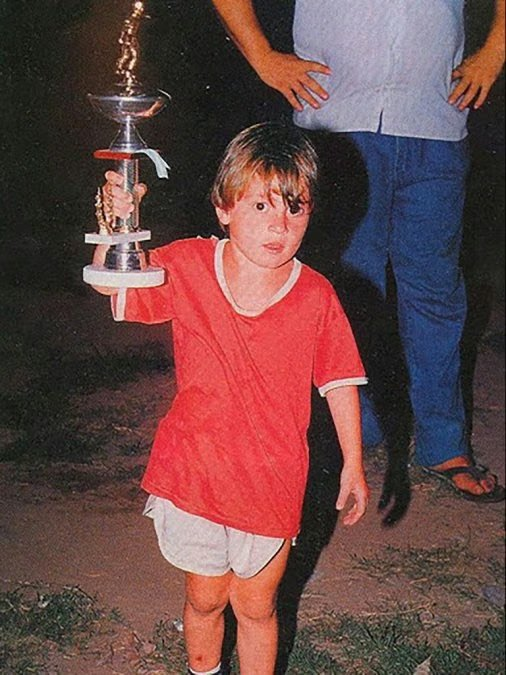

Infancia en Rosario

Nacimiento en Rosario
Lionel Andrés Messi nació el 24 de junio de 1987 en Rosario, Santa Fe. Creció en una ciudad donde el fútbol formaba parte de la vida cotidiana y, desde muy chico, encontró en la pelota una de sus mayores pasiones.
Su entorno familiar
Leo creció rodeado de una familia muy cercana y vinculada al fútbol. Sus padres, Jorge y Celia, y sus hermanos lo acompañaron en sus primeros años, mientras él pasaba gran parte de su tiempo jugando con familiares y amigos.
Primeros partidos en Grandoli
Sus primeros partidos organizados fueron en Grandoli, un club de barrio de Rosario. Allí comenzó a jugar siendo muy pequeño, acompañado por su familia y con el entusiasmo que lo caracterizaría durante toda su carrera.
Las inferiores de Newell’s
Más adelante se incorporó a las divisiones infantiles de Newell’s Old Boys. Con la camiseta rojinegra empezó a destacarse por su habilidad, su velocidad y su facilidad para superar rivales, mientras disfrutaba de jugar junto a sus compañeros.
La prueba en Barcelona
A los 13 años viajó a Barcelona para realizar una prueba en el club catalán. Su talento dejó una gran impresión y aquella oportunidad marcó el comienzo de una nueva etapa, lejos de Rosario y de su vida en Argentina.